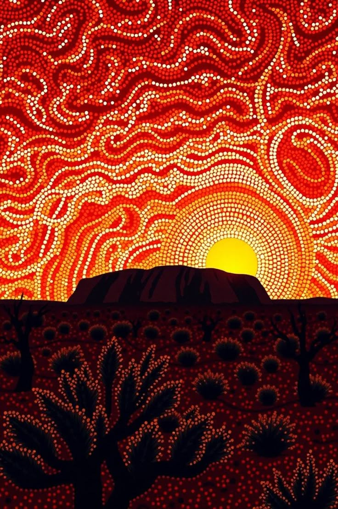
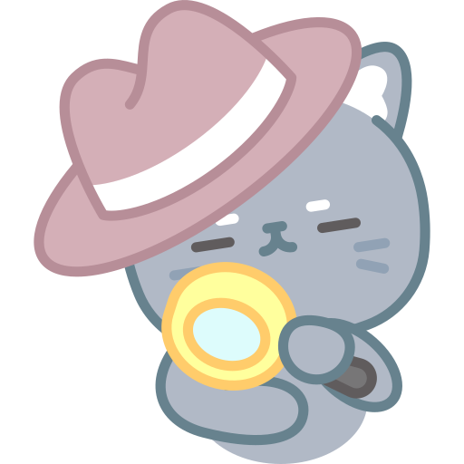
The Oldest
Living Culture on Earth
G'day, detective! 🐾 Today we visit the Aboriginal peoples of Australia. Then a new skill: building simple, compound and complex sentences.
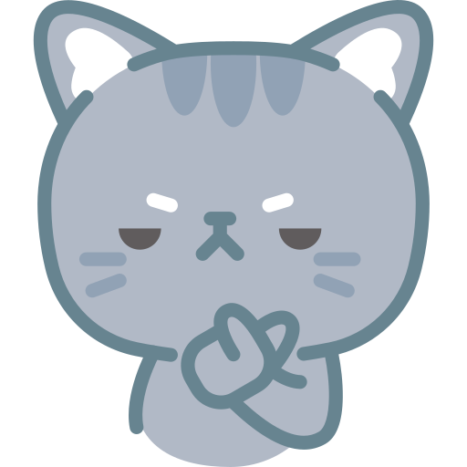
What do you know about Australia? 🦘
Tell your tutor…
- ☀️Which animals live in Australia? How many can you name?
- 📖What is the oldest story someone in your family has told you?
- 🎨Could you tell a whole story without any words — just a picture?
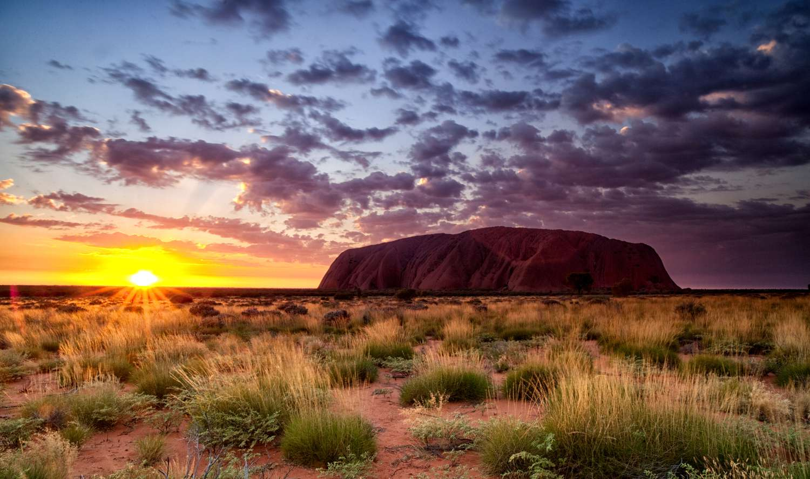
“The Oldest Living
Culture on Earth”
🗣️ Read it aloud, taking turns with your tutor. Notice the subheadings, and stop at every ⚡ Word Challenge. Keep your detective eyes open! 🔍
The Aboriginal peoples of Australia have one of the oldest living cultures on Earth. Their ancestors have lived on the vast Australian continent for tens of thousands of years — far longer than almost any other people anywhere in the world. For all that time, they have kept a deep and special connection to their land.
🔍 Word clue: ancestors = the people in your family who lived long, long before you.
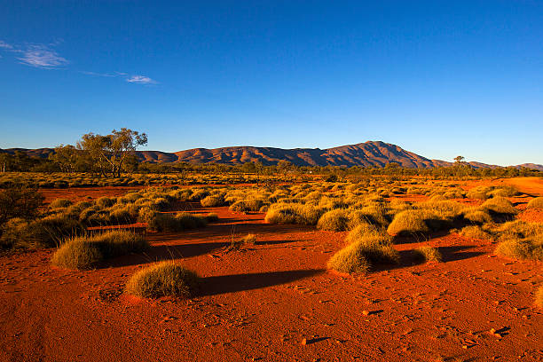
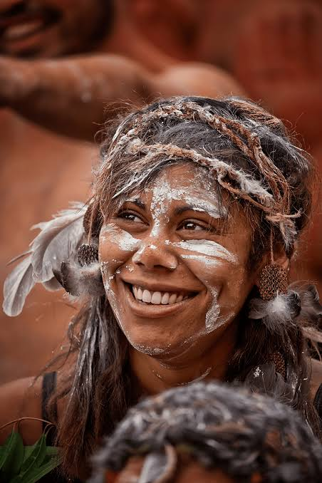
Scientists believe Aboriginal peoples have lived in Australia for at least fifty thousand years. In that time they came to know their land better than anyone — where to find water in the desert, which plants were safe to eat, and how to track animals across bare ground. This knowledge was passed down carefully from parents to children, over hundreds of generations.
Two ideas joined. Read: “The hunters tracked the animals, and the women gathered plants.” That's two complete ideas in one sentence. Which small word joins them?
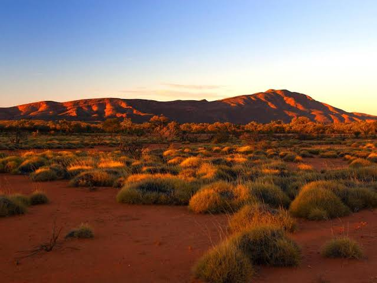
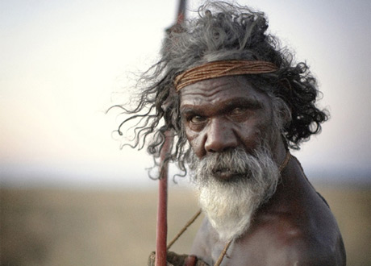
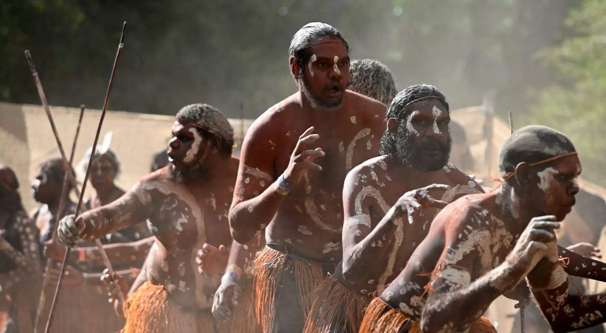
Stories you can dance
Look closely. What are the dancers wearing? What do you think the white paint is for? Find three clues.
💡 Try joining two ideas: “The men are dancing, and the crowd is watching.”
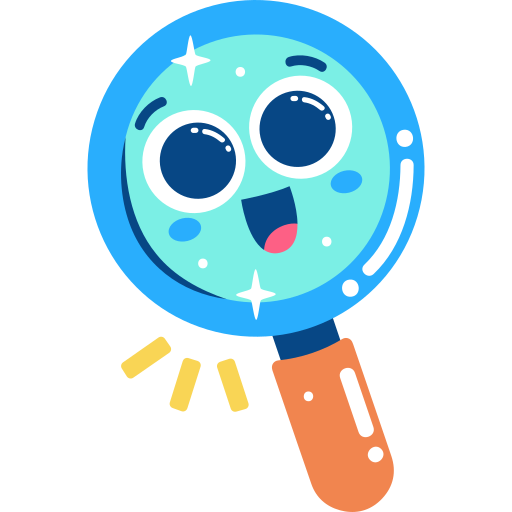
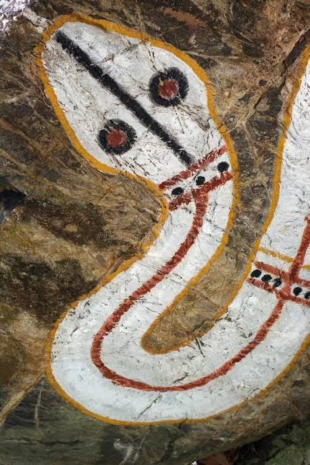
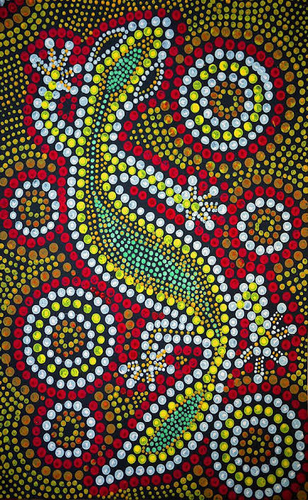
At the heart of Aboriginal culture are the special stories known as the Dreaming. These stories explain how the land, the animals and the people were created by powerful ancestral spirits long ago. The Dreaming also teaches people how to live well and care for the land. Because there was no writing, these stories were passed on by telling, singing and painting.
A part that can't stand alone. “because there was no writing” is not a full sentence by itself. Which word makes it depend on the rest?
Aboriginal peoples are famous for their art. On rocks and in caves across Australia, they painted animals and spirit figures, and some of these paintings are many thousands of years old. They are also known for the boomerang, a clever curved throwing stick, and the didgeridoo, a long wooden instrument that makes a deep, humming sound.
🗣️ Chat: which painting do you like best? Why?

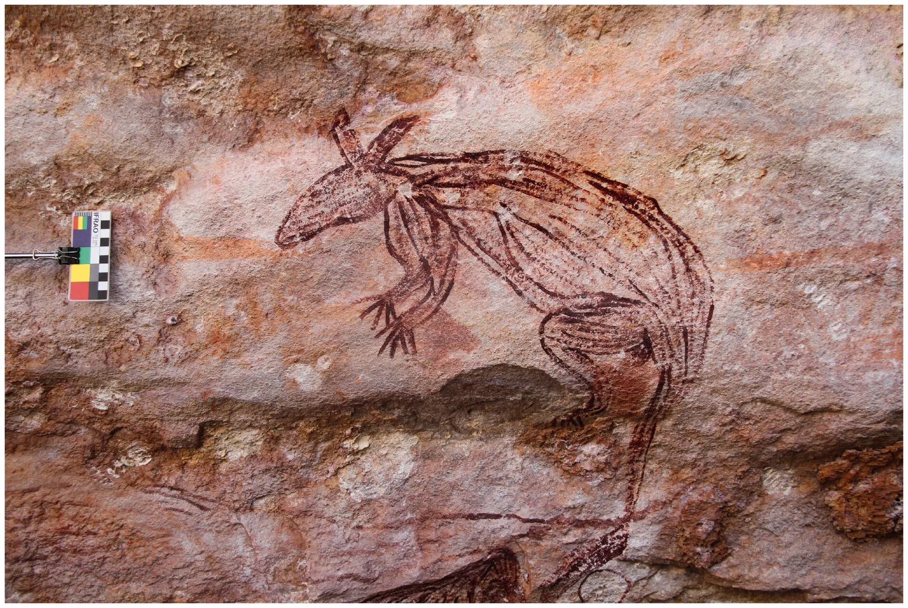
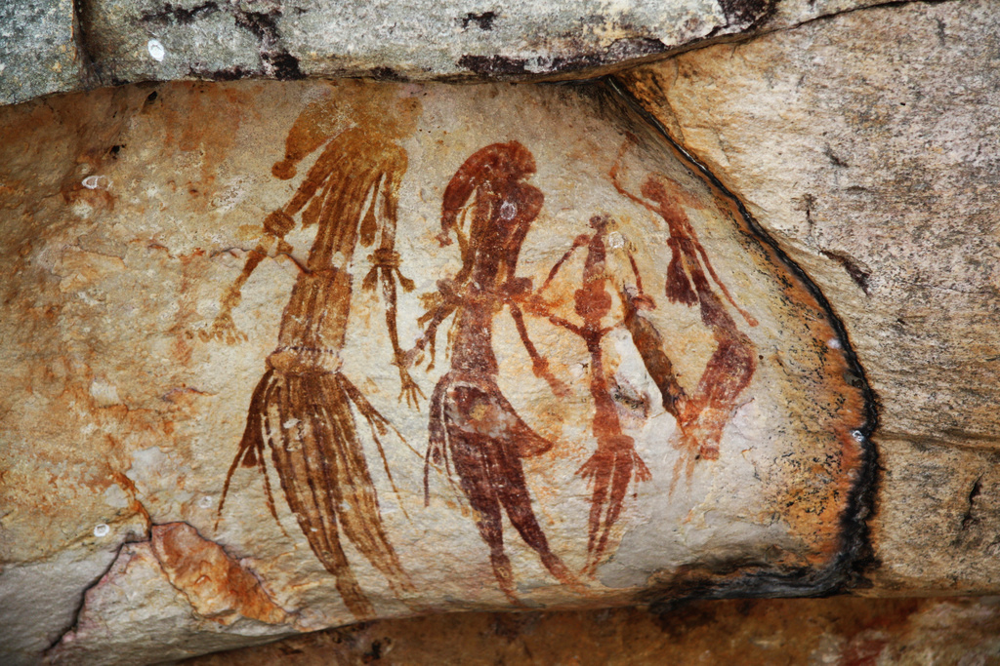
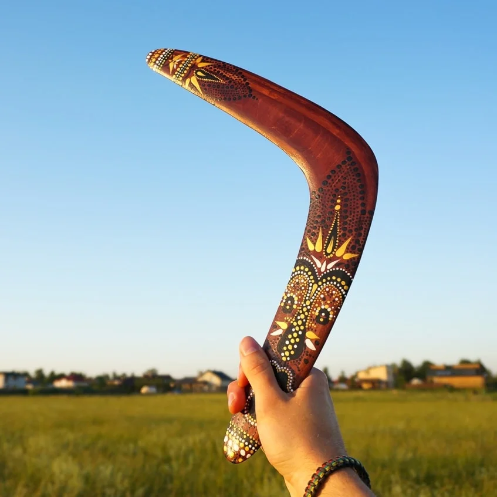
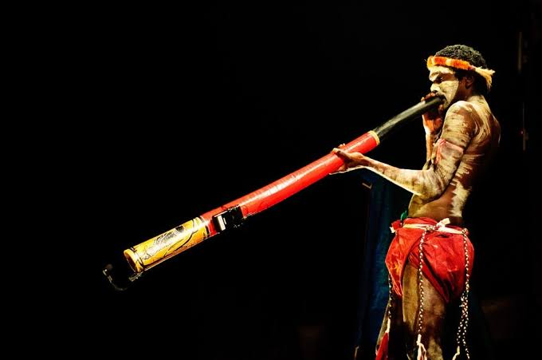
Throw it… blow it!
How do you think a boomerang comes back? Can you copy the sound of a didgeridoo? 🎵
💡 Try a but sentence: “The boomerang is small, but it flies very far.”
There was never just one Aboriginal group. Australia was home to hundreds of different peoples, each with its own land, customs and language. In fact, more than two hundred and fifty Aboriginal languages were once spoken across the continent, each carrying its own stories and songs.
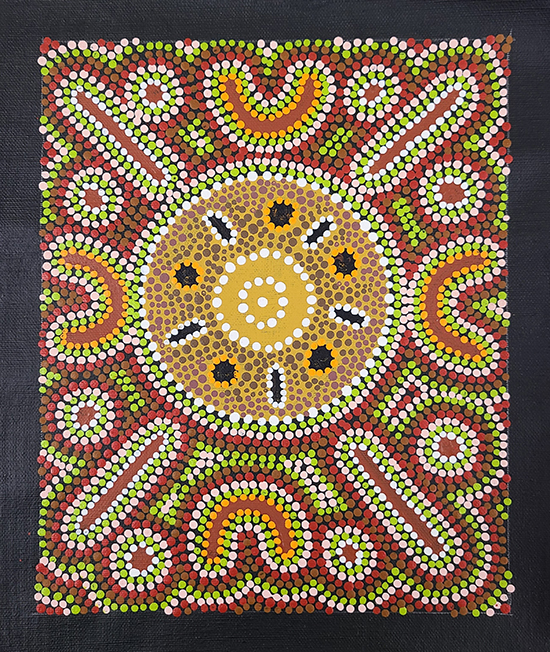
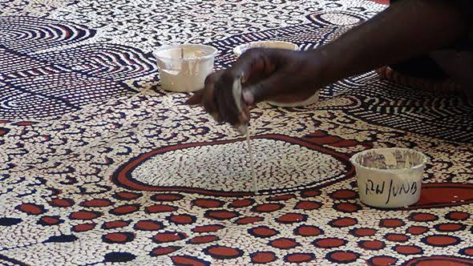
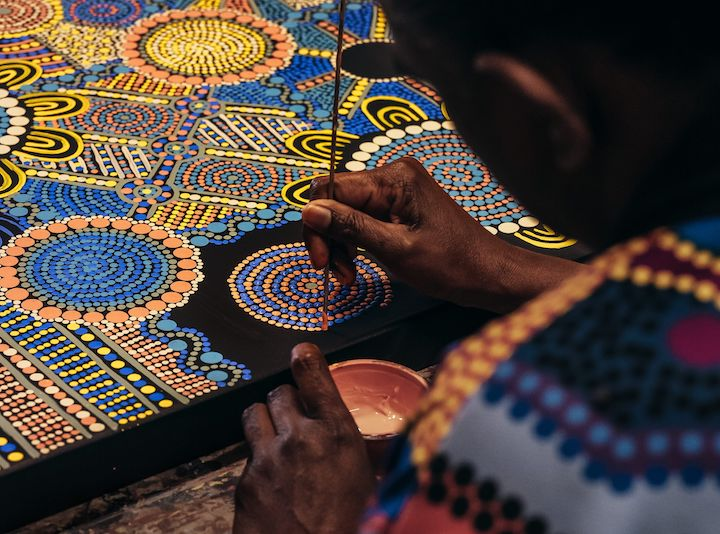
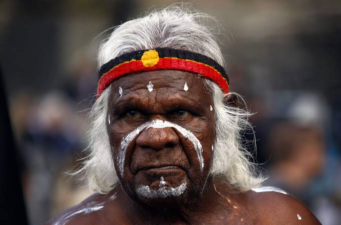
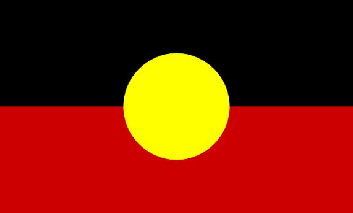
Aboriginal peoples have faced many hardships over the last few hundred years, yet their culture remains strong and proud. Today their art, music, stories and languages are celebrated across Australia and around the world — a living link to the very deep past of the human story.
🔍 Flag clue: black = the people, red = the earth, yellow = the sun. ☀️
Read the question twice, turn it around, and use “because” for “why” questions!
- 1For how long have Aboriginal peoples lived in Australia?
- 2What are the stories of the Dreaming about?
- 3Why were the stories passed on by telling, singing and painting?
- 4Name one thing Aboriginal peoples are famous for.
- 5Think deeper: they knew where to find water in the desert. What does this tell us about them?
Simple, Compound & Complex
It all depends on how many clauses you join — idea-parts with a subject and a verb.
One complete idea.
The dingo howled.
Two complete ideas joined by and, but, or, so.
The dingo howled, and the campfire glowed.
Main idea + a part that can't stand alone: because, when, although, if, while.
The dingo howled because it heard a noise.
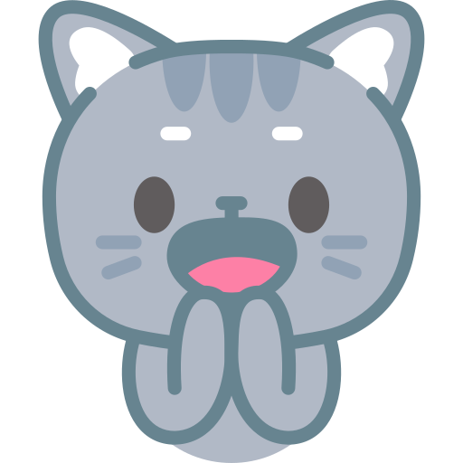
Too many short sentences sound choppy 🪓
😴 The fire burned. It was dark. We sang. A dingo howled.
🔥 The fire burned while we sang, and far away a dingo howled.
Which one sounds more like a real story?
1. The boomerang spun through the air.
2. The sun set, and the campfire glowed.
3. We stayed inside because it was raining.
4. The children played while the adults cooked.
5. I like the art, but my brother likes the music.
6. The river flowed quietly.
1. The hunter threw the boomerang. It flew back to him. 2. I wanted to swim. The water was too cold. 3. We can walk to the river. We can take the boat.
1. We went home. It got dark. 2. She kept smiling. She was tired. 3. The dog barked. A stranger walked past.
Compound: The rain fell, and… Complex: The rain fell while…
Write three sentences about a campfire at night 🔥 — one simple, one compound and one complex. Label each!
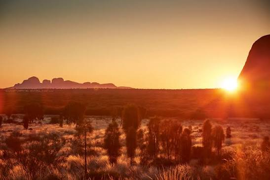
An evening around a campfire in the outback 🔥
Write about five sentences. Mix the types so it flows!
💡 Think: stars ✨ · crackling fire · a didgeridoo · stories · a dingo far away
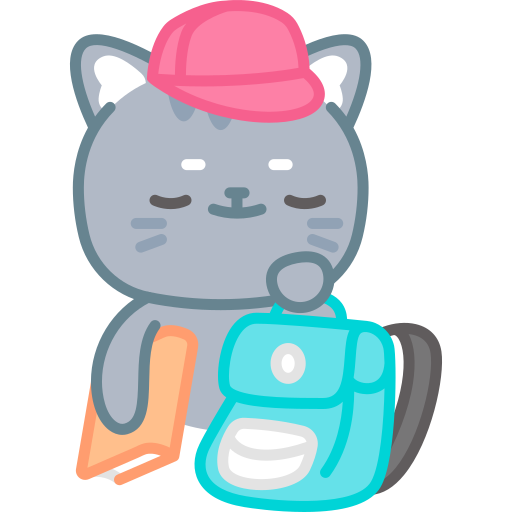
- 1Write two compound sentences (join two ideas with and, but, or or so).
- 2Write two complex sentences (use because, when, although or while).
- 3Find a simple sentence in a book you're reading, then rewrite it as compound or complex.
Tell me without looking: which joining words make a compound sentence? Which make a complex one?
Coming in Lesson 31
Antonyms — words that mean the opposite — and how the right opposite makes your writing sharper.
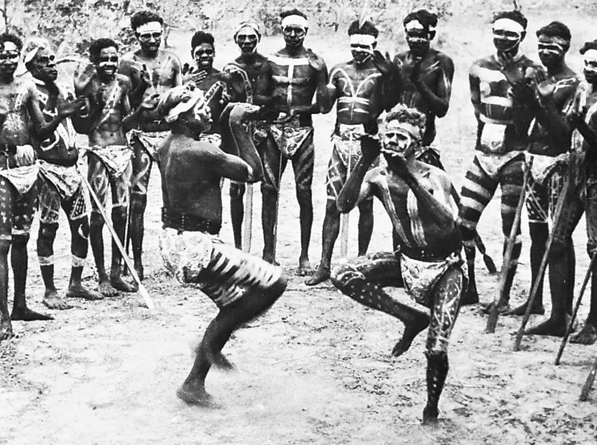
Beaut work!
Well done, detective 🐾
You built simple sentences, joined them into compound ones, and you grew them into complex ones because you're a star! ⭐